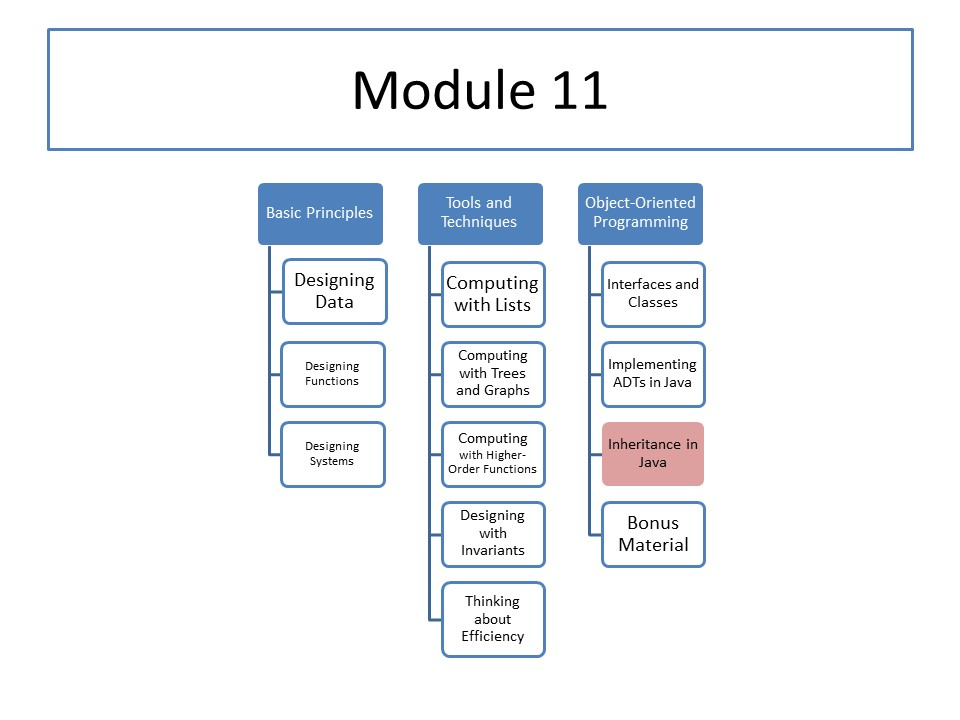

CS 5010: Module 11
Module Overview
In this module, we will learn about inheritance, which is a mechanism that allows us to generalize the implementations of similar classes. Inheritance allows us to make a new class that is very similar to an old one, or to make a new class that generalizes the implementations of several similar classes.
Course Map
Readings
No required readings.
Resources
- Examples for Module 11
- In-Class Materials for Module 11
-
Trail: Learning the Java Language
(You can use this as a reference manual for the Java language. The real reference manuals for Java are far more detailed, and tell you more than you need to know for this course.) - Application Programming Interface for Java 8
- Chris Okasaki. Red-black Trees in a Functional Setting, Journal of Functional Programming, 9(4) 471–477, July 1999.
Lessons
- Lesson 11.1: Basics of Inheritance
- Lesson 11.2: Using Inheritance to Share Implementations
- Lesson 11.3: Case Study: Immutable Finite Functions, Part 1
- Lesson 11.4: Case Study: Immutable Finite Functions, Part 2
Problem Set
Problem Set 11 will be the last problem set.